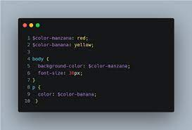
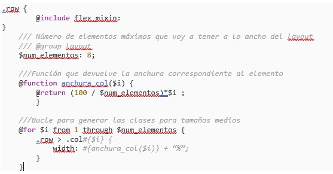

¿Qué es Sass?
Sass es un procesador CSS.
Un preprocesador CSS es una herramienta que nos permite generar, de manera automática, hojas de estilo, añadiéndoles características que no tiene CSS, y que son propias de los lenguajes de programación, como pueden ser variables, funciones, selectores anidados, herencia, etcétera.
Estas características de los procesadores nos permiten, además, que el CSS que se genera sea más fácil de mantener y más reutilizable.
Ventajas de utilizar Sass
El uso de una herramienta como Sass proporciona una serie de ventajas, como son las siguientes:
Reduce el tiempo para crear y mantener el CSS.
Permite tener una organización modular de los estilos, lo cual es vital para proyectos grandes.
Proporciona estructuras avanzadas propias de los lenguajes de programación, como variables, listas, funciones y estructuras de control.
Permite generar distintos tipos de salida, comprimida, normal o minimizada, trabajando tanto en desarrollo como en producción, además se hace una forma muy fácil.
Permite vigilar los ficheros, de tal manera que, si ha habido un cambio en la hoja de estilos, se regenera automáticamente (modo watch).
Tiene muy pocas dependencias, sobre todo la nueva versión, que es dart-sass. En las anteriores versiones se dependía de muchas librerías de Ruby y era un poco engorroso de instalar, pero con la nueva versión, la instalación es muy fácil.
Existen muchas herramientas asociadas, muchas librerías hechas con Sass y una comunidad muy importante de usuarios.
Ejemplo de uso de Sass
A continuación, veremos un pequeño ejemplo de Sass, dónde podemos ver los elementos básicos de este preprocesador CSS, como estructuras repetitivas, variables, funciones o parámetros:
Podemos ver que hay muchos elementos, pero tienen una sintaxis muy similar a CSS, añadiendo potencialidades de lenguaje de programación.
Una vez que ejecutamos nuestro fichero SCSS, se generaría un fichero CSS de salida de forma automática.

